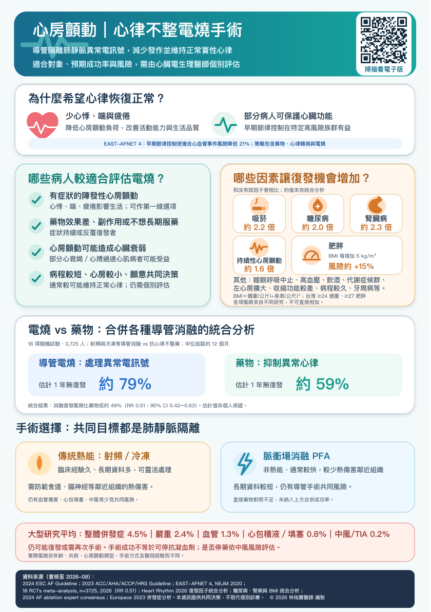

併發症、復發與抗凝血藥
尚未播放
查看原始衛教圖卡

原稿來源與說明
資料來源（查核至 2026-08）：
2024 ESC AF Guideline；2023 ACC/AHA/ACCP/HRS Guideline；EAST-AFNET 4, NEJM 2020；
18 RCTs meta-analysis, n=3725, 2026（RR 0.51）；Heart Rhythm 2026 復發因子統合分析；糖尿病、腎病與 BMI 統合分析；
2024 AF ablation expert consensus；Europace 2023 併發症分析。本資訊圖供共同決策，不取代個別診療。 © 2026 林祐賸醫師 編製